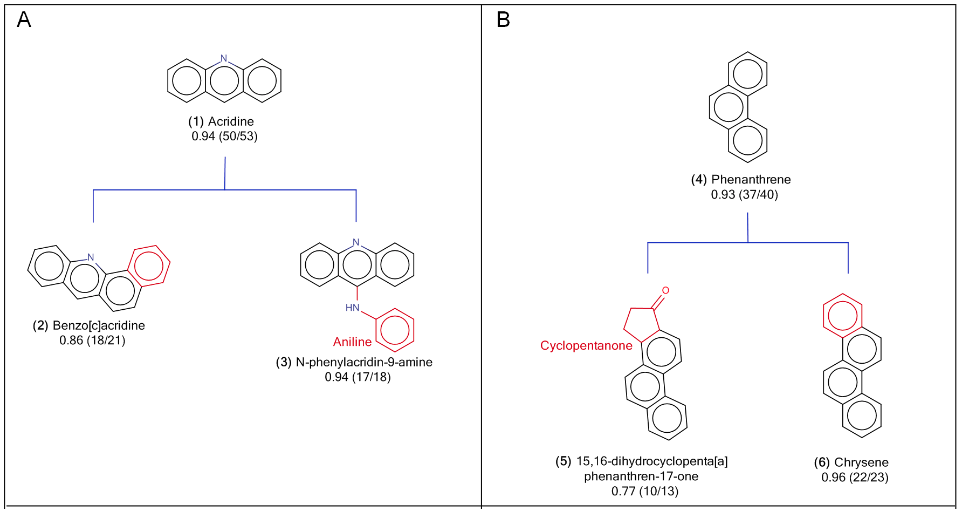
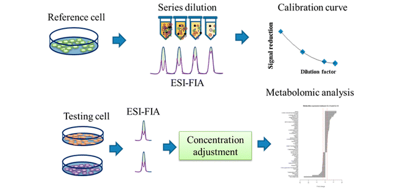

With advances in the development and application of Ames mutagenicity in silico prediction tools, the International Conference on Harmonisation (ICH) has amended its M7 guideline to reflect the use of such prediction models for the detection of mutagenic activity in early drug safety evaluation processes. Since... Link >>
Targeted metabolomic analysis of fatty acids has linked the dysregulation of fatty acids to many diseases. This study selected five frequently used fatty acid derivatization methods for comparison.We compared the method ... Link >>
Existing non-invasive lung cancer diagnostic equipment has difficulty in detecting early stage lung cancer as abnormal tissue is smaller than 0.5cm in size. According to studies showing that volatile organic compounds (VOCs) from human breath gas can provide biomarkers for human disease, especially for lung ... Link >>
Studies of the cell metabolome greatly improve our understanding of cell biology. Currently, most cellular metabolomics studies control only cell numbers or protein content without adjusting the total metabolite concentration, mainly because of the lack of an effective concentration normalization method for ... Link >>
The influenza nucleoprotein (NP) is a single-strand RNA-binding protein and the core of the influenza ribonucleoprotein (RNP) particle that serves many critical functions for influenza replication. NP has been considered as ... Link >>